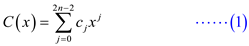
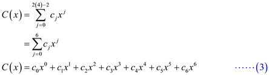

Consider the following polynomials:
From , consider the coefficients as follows:
From  , consider
the coefficients as follows:
, consider
the coefficients as follows:
The equation 30.1 of chapter 30, section 30.1 in the textbook is as follows:

where
The degree bound of polynomial and
is
(n =) 4.
The polynomial is the
obtained polynomial after multiplying polynomial and
.
To calculate the value of substitute n = 4 in (1).

Substitute j = 0 in (2) to calculate the value of .
Substitute j = 1 in (2) to calculate the value of
 .
.
Substitute j = 2 in (2) to calculate the value of
 .
.
Substitute j = 3 in (2) to calculate the value of .
Substitute j = 5 in (2) to calculate the value of .

Substitute j = 6 in (2) to calculate the value of .
Now substitute the values of in equation (3).
Therefore, .
Evaluation of Polynomial
Consider a polynomial A(x), which has a degree bound of n. Degree bound of n means that x can have a maximum power of n. At a point x0, if the polynomial is divided by (x- x0), it provides a quotient q(x) which has a degree-bound of n-1 and r as remainder.
So, the polynomial can also be represented as:
Expansion of A(x) and q(x) can be given as:
Taking the value of A(x) as:
Taking value of remainder r at left side, the equation will be:
… … (a)
Substituting the value of A(x), the equation will be:
… … (1)
Taking right hand side of equation (a) which is given below:
Substituting the value q(x) of in the above equation, the equation can be given as:
Now, multiplying x and x0 with the expanded q(x), the equation can be written as:
As when x is multiplied with first extended part of q(x), this makes an increment in its degree bound. This is shown below:

Now, separating the coefficients of x which has similar degree, the equation can be given as:
Taking the similar coefficients of x as common, the equation can be written as:
… … (2)
Now here is the equation which shows equality of two polynomials, where polynomial have degree bound of n, which is valid for any x. This means that in both equations, coefficients of corresponding powers of should be
equal.
should be
equal.Now, compare the equation (1) and (2) according to their co-efficient. In both equations, x has a degree of n for an and qn-1.
So, both of them will be equal. This can be given as:
Similarly, x has a degree of n-1 for an-1 and . So, both of them will be equal. This can be given as:
Similarly, x has a degree of n for an-2 and . So, both of them will be equal. This can be given as:
The coefficients are given.
The coefficient is
calculated from first equation. Using this and all the
values can be calculated. The use of last equation is for finding
the value of  , since the
value of is found
out previously.
, since the
value of is found
out previously.
So, the number of steps needed to find and the
value ofby using the
above equations is and finding
each coefficient takes a constant time.
and finding
each coefficient takes a constant time.
So, the total number of steps to find and
through
this method is  .
.
Point value representation: The point value
representation of a polynomial say  of degree
bound
of degree
bound is
.
is
.
Here are
distinct points and
the points satisfy the
condition,
Consider a polynomial,
…… (1)
Consider distinct points say
Substitute in (1)
Substitute in (1)
Similarly,

Thus the point value representation of a polynomial is

Such that
Consider a polynomial,
…… (2)
Consider distinct points say
such that
Substitute in (2)
Substitute in (2)
Similarly,
Consider,
Consider,
Similarly,

Thus the point value representation of a polynomial is
Here,
And
Consider a set of n point-value pairs and a polynomial of degree k such that for. This can be represented by the following matrix:
The matrix on the left is represented by and is called the Vandermonde matrix. The polynomial is represented by.
• This multiplication is valid only if number of columns in
matrix  = number of
rows in matrix
= number of
rows in matrix . The
matrixis supposed
to have n rows because the polynomial has a degree
n.
. The
matrixis supposed
to have n rows because the polynomial has a degree
n.
• Matrix is a square
matrix created from the elements of the point-value pairs. It
should have the order  according
to the previous statement.
according
to the previous statement.
Multiplying on both sides:
Thus, inverse matrix must exist for the unique polynomial of degree n to exist.
A matrix is said to be invertible only if its determinant exists.
Existence of determinant can be found out by the following method:
Each element of a row is same. So, if any two rows have the same
element, then the determinant value becomes 0 and the matrix
is
not invertible.
If it is not invertible then cannot exist. So, specifying a unique polynomial of degree-bound n fails.
Therefore, for the matrix to exist
there must be unique rows of matrix.
Hence it is proved that n distinct point-value pairs are necessary to uniquely specify a polynomial of degree-bound n .
The Lagrange’s formula is given as:
To show that this equation can be interpolated in time , the following procedure is followed:
• Show that the coefficient representation of can be computed in time
by using recursion. It can be shown that on multiplying by
takes time because the multiplication must be done n times so total run
time is .
• If the coefficient representation of is then in order to multiply by set for i= 1,2,3…k. The time to compute the next product is because each of these coefficients can be computed in constant time.
• Now, compute for each k, which takes the running time as .
• Thus, remainder obtained is so, each
is
computed in time  .
.
So, the total time to compute all the values is
Therefore, each term of the expression which includes the
division of by
multiplied by takes
time and on
summation the time complexity is .
Hence, the summation of n polynomials take time:
Consider the sets  and
and
 .
These sets contain
.
These sets contain  integers in
the range from 0 to .
integers in
the range from 0 to .
Now, compute the Cartesian sum of and
.
Cartesian sum of and
is
given by,
To find their sum, represent the two sets, and
,
in the polynomial form. In the polynomial form, set can be
represented as follows:
and set can be
represented as follows:
As the maximum range of sets and
is
,
the polynomial and
 are of degrees at most .
are of degrees at most .
The sum of two polynomials of degree-bound is a polynomial of degree-bound .
Increase the degree-bounds of the polynomial and
to
by
adding high-order
coefficients of 0 because the polynomials (can be considered as
vectors) have
elements.
Now, use complex roots of
unity, which can be denoted by the terms.
Provided a Fast Fourier Transform (FFT), compute the polynomial
addition of two polynomials and
in
times using the following algorithm.
• Create a coefficient representation of and
as
degree-bound polynomials
by adding high-order
coefficients of 0 to each.
• Compute point value representation of and
of
length using the
two applications of the FFT of order . These
representations contain the value of the two polynomials at the
roots of unity.
• Compute a point-value representation for the polynomial by adding these values together point wise. This representation contains the value of at each roots of unity.
• Create the coefficient representation of the polynomial through a single application of an FFT on point value pairs to compute the inverse (converting the polynomial to set form).
Analysis of the algorithm:
• In steps-1, adding high-order coefficients take a time of .
• In steps-2, computing point value representation of and
of
length takes a
time of .
• In steps-3 computing a point-value representation for the polynomial takes a time of .
• In steps-4, creating the coefficient representation of the polynomial through a single application of an FFT takes a time of .
Calculate the total time complexity of the algorithm by adding the time taken by each step.
Hence, the sum of two polynomials of degree-bound can be computed in time , with both the input and output representation forms.